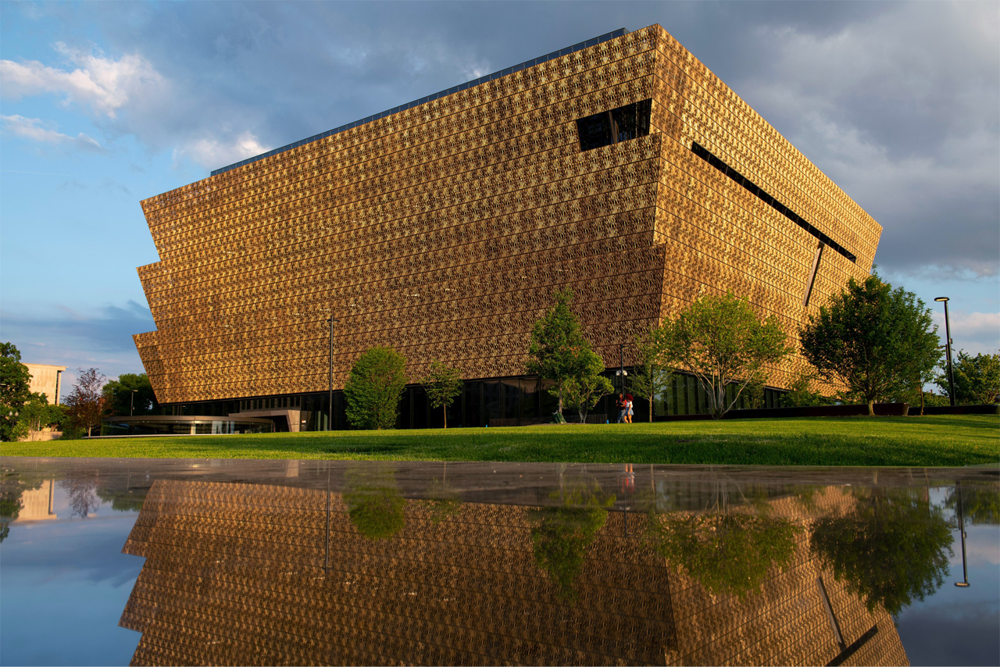

National Museum of African American History & Culture
Upcoming Events
District Treasures
On Wednesday, February 12, 2020 the National Museum of African American History and Culture will host District Treasures. This in-museum program will provide registered guests the opportunity to attend a one-on-one session with preservation specialists and receive a professional review of family treasures and heirlooms. Attendees will gain insight on the historical significance of their items and learn best practices for preservation. The February 12th session will focus on photos, paper, books, objects, ephemera, and/or textiles. Bring your family treasures for review! The program serves as an audience engagement and educational enrichment opportunity for all. Register online space is limited.
Toddling Treasures: Exploring Color
What a colorful world we live in! Come discover a rainbow of color through a colorful hunt for objects in a museum gallery. Then, for further color exploration, engage in sensory activities like colorful craft-making, rainbow ribbon dancing, a sorting and matching game and more! Pre-registration is mandatory and will open one week prior to the program date.
Chef’s Table & Book Signing with Kwame Onwuachi
Chef Kwame Onwuachi (Executive Chef at Kith and Kin) will prepare a special menu in Sweet Home Café in celebration of African American History Month. Onwuachi is the 2019 recipient of the James Beard Foundation “Rising Star Chef of the Year” award. Copies of his autobiography, Notes from a Young Black Chef: A Memoir will be available for purchase and signing courtesy of Smithsonian Enterprises.

STEM Day: Engineering
To help celebrate National Engineering Week, NMAAHC will highlight the long lineage of African American engineers. From the earliest people of African descent using their knowledge of rice cultivation to the newest generation of technology prodigies and inventors, the contributions of African Americans to the nation’s prosperity, history and culture are significant. This program will introduce our visitors to the world of engineering and share how African Americans have shaped and influenced the world.